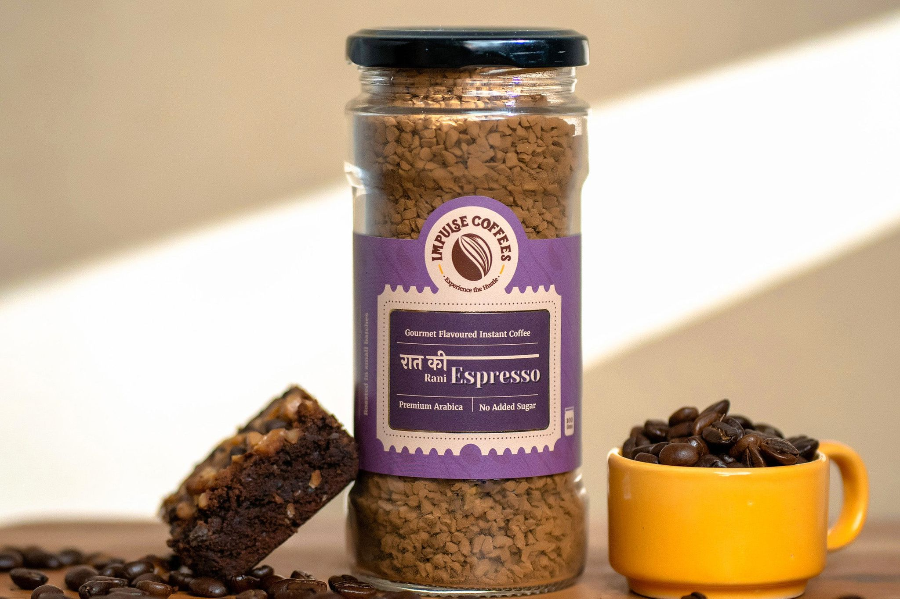
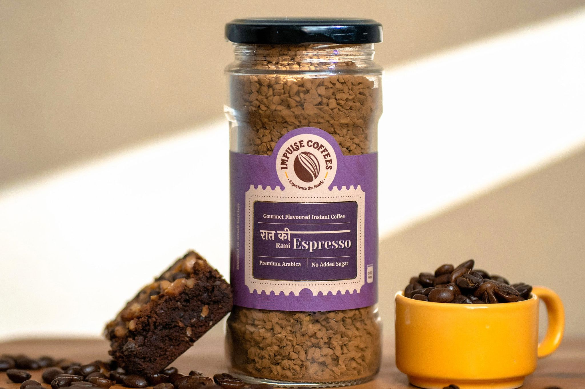

The History of Coffee
Coffee has a rich history that dates back to the 15th century in Ethiopia. Over the centuries, it spread across the globe, becoming one of the most beloved beverages worldwide. Today, coffee houses are cultural hubs for conversation and creativity.
Popular Coffee Types
Coffee comes in many varieties and brewing styles. Some of the most popular include Espresso, Cappuccino, Latte, and Cold Brew. Each has a unique flavor and preparation method.
Benefits of Coffee
Beyond its rich flavor, coffee offers many benefits. It can boost energy, improve focus, and is packed with antioxidants. When consumed in moderation, it can even support long-term health.